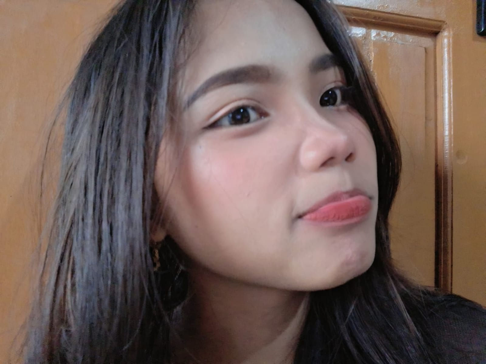

Profil

Gadis Diatas merupakan seorang cewe yang bernama Nabila Asfarina atau biasa dipanggil dengan nama Abel, dia merupakan seorang gadis yang berasal dari banyuwangi. Abel lahir di Jakarta pada tanggal 29 Agustus 2006. Saat ini Abel akan berumur 20 tahun. Abel tinggal bersama nenek nya dan terkadang oom nya pulang apabila mendapatkan cuti dari kerjaannya. Pendidikan terakhir Abel adalah SMA. Abel SMA di SMA IBRAHIMY yang berada di Banyuwangi. Abel memiliki hobi olahraga dan juga rebahan karena untuk mengisi waktu senggangnya dan terkadang juga scroll tiktok dan bermain game.